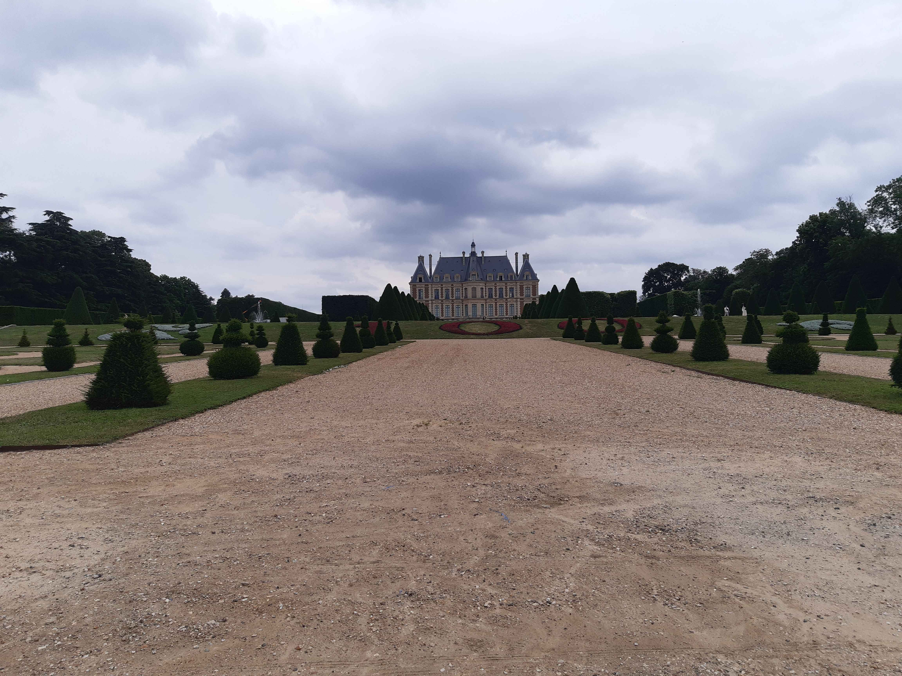

Retour
Paris et petite Couronne
GR75
- Type : boucle
- Description de l'itinéraire : GR75
- Distance : 52 km
- Dénivelé positif : 200 m
- Point le plus bas : 29 m
- Point le plus haut : 117 m
- Cotation en l'absence de neige : T1
- Intérêt : 3/5
- Date : 26/11/2023
- Photos : aucune
GR655 de Lozère à Paris
- Type : aller simple
- Description de l'itinéraire : GR655 de Lozère à la cathédrale Notre-Dame
- Distance : 29 km
- Dénivelé positif : 400 m
- Point le plus bas : 36 m
- Point le plus haut : 167 m
- Cotation en l'absence de neige : T1
- Intérêt : 2/5
- Date : octobre ou novembre 2023
- Photos :
 Le château de Sceaux